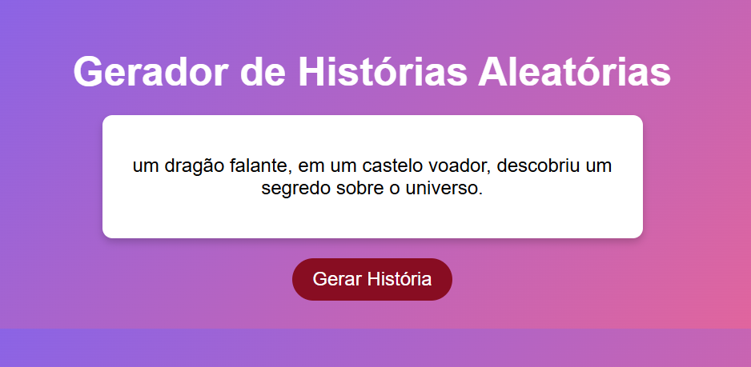
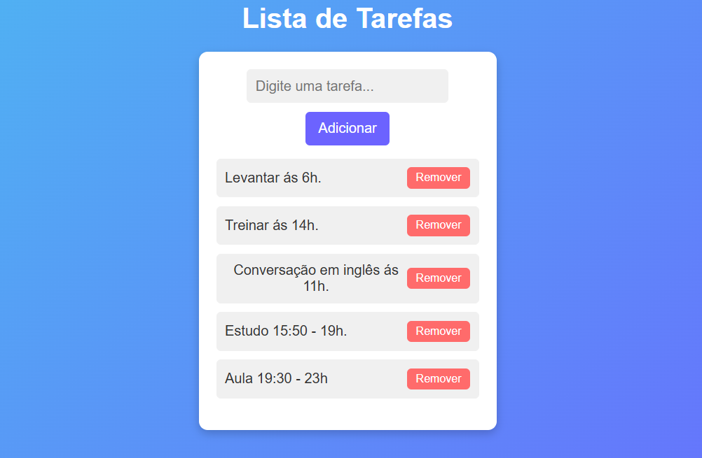

Sobre Mim
Olá, sou Gustavo Saturnino, desenvolvedor em formação com experiência prática em atendimento, logística e liderança. Estou no 3º semestre de Análise e Desenvolvimento de Sistemas e me especializando em desenvolvimento FullStack com JavaScript. Minha paixão por programação e habilidade em resolver problemas impulsionam a construção da minha carreira na área de tecnologia, onde busco criar soluções eficientes e inovadoras.
Meus Projetos

Gerador de Histórias
Ver Projeto
